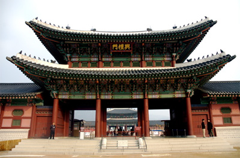

Gyeongbokgung palace

Address
Seoul-si Jongno-gu Sajik-ro 161
Type
Palaces
Inquiries
1330 tt call center: +82-2-1330 (Korean, English, Japanese, Chinese)
For more info: +82-2-3700-3904~5, +82-2-738-9171
Homepage
royalpalace.co.kr (Korean, English)
Introduction
Built in 1395, Gyeongbokgung Palace is also commonly referred to as the “Northern Palace” because it is the furthest north when compared to the neighboring palaces of Changdeokgung (Eastern Palace) and Gyeongheegung (Western Palace). Gyeongbokgung Palace is arguably the most beautiful and remains the grandest of all five palaces.
The premises were destroyed by fire during the Imjinwaeran War (Japanese Invasion, 1592-1598). However, all of the palace's 7,700 rooms were later restored under the leadership of Heungseondaewongun during the reign of King Gojong (1852-1919).
Remarkably, the most representative edifices of the Joseon Dynasty, Gyeonghoe-ru Pavilion and Hyangwonjeong Pond are still relatively in tact. Woldae and the sculptures of Geunjeongjeon (The Royal Audience Chamber) represent past sculpture of contemporary art.
The National Palace Museum of Korea is located south of Heungnyemun Gate, and the National Folk Museum is located east within Hyangwonjeong.
Current Status
Historic Site No.117
Closed
Tuesdays
Operating Hours
March-October: 09:00-18:00
November-February: 09:00-17:00
* Last admission: 1 hr before closing.
* Operating hours are subject to change depending on circumstances.
Parking Facilities
Cars: 280 parking spaces
Buses: 40 parking spaces
Admission Fees
Adults (ages 19-64): 3,000 won / Group (over 10): 2,400 won
Children (ages 7-18): 1,500 won / Group (over 10): 1,200 won
Facilities for the handicapped
Wheelchair rental services (near Geunjeongmun Gate), restrooms, wheelchair accessible entrance, reserved parking spaces.
Available facilities
Storage locker, souvenir shop, water fountain, snack bar, etc.
Restrooms
Available
Interpretation services offered
Tours depart in front of the Information Center at Heungnyemun Gate.
Duration: 1hr - 1hr, 30min
Tour Schedule:
English: 11:00, 13:30, 15:30
Japanese: 10:00, 12:30, 14:30
Chinese: 10:30, 13:00, 15:00
* Reservations are required for groups of 10 or more.
Group reservation: +82-2-723-4283
Reservations in Chinese: +82-2-723-4268
Baby stroller rentals
Available (near Geunjeongmun Gate)
Pets
Not permitted
Directions
Gyeongbokgung Palace Station (Seoul Subway Line 3), Exit 5.
OR
Gwanghwamun Station (Seoul Subway Line 5), Exit 2.